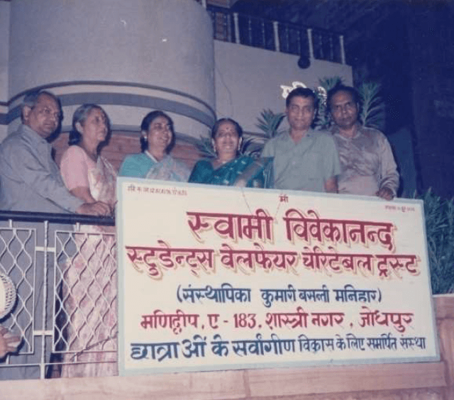
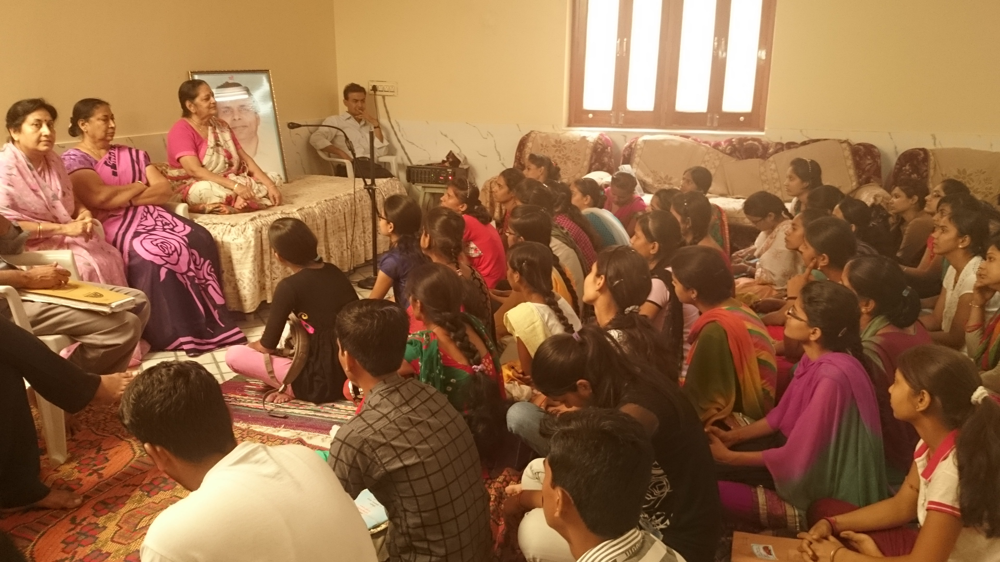

इष्टदेव का स्मरण
अपने इष्टदेव पर निःस्वार्थ भाव से विश्वास रखते हुए उनका नित्य स्मरण करना।
धनाभाव से शिक्षा न रुके, शिक्षा संस्कार से जुड़े और बालिकाएँ आत्मविश्वास के साथ अपने भविष्य की ओर बढ़ें।
लगभग तीन दशक पूर्व पश्चिमी राजस्थान में आर्थिक कठिनाइयों के कारण अनेक बालिकाएँ शिक्षा से वंचित हो रही थीं। भैया श्री नन्दकिशोर जी शारदा ने अनुभव किया कि धनाभाव किसी भी बालिका की शिक्षा और भविष्य में बाधक नहीं बनना चाहिए तथा शिक्षा ही आत्मनिर्भरता और सामाजिक उन्नति का आधार है।
इसी विचार को साकार करने के लिए जगत्जननी माँ की आज्ञा से सुश्री बसन्ती जी मनिहार ने 10 जून 1996 को जोधपुर में इस ट्रस्ट की स्थापना की और भैया श्री नन्दकिशोर जी इसके अध्यक्ष बने।


ट्रस्ट का मूल उद्देश्य आर्थिक रूप से कमजोर छात्राओं को शिक्षा जारी रखने के लिए सहायता प्रदान करना था। भैया जी, माँ बसन्ती जी एवं मधु माँ ने इसे केवल सामाजिक दायित्व नहीं, बल्कि माँ की साधना और मानव-सेवा का माध्यम माना।
छात्रवृत्ति अंकों के आधार पर नहीं, बल्कि आर्थिक आवश्यकता, पारिवारिक परिस्थिति तथा विद्यालय की फीस को ध्यान में रखकर दी जाती है। चयन में जाति, धर्म या सम्प्रदाय का कोई भेदभाव नहीं किया जाता।
‘सर्वजन हिताय, सर्वजन सुखाय’ के मूल मंत्र पर आधारित यह सेवा शिक्षा को सामाजिक समानता और राष्ट्र-निर्माण का माध्यम मानती है।
छात्राओं को आगे बढ़ने के लिए तीन सरल पर गहरे संकल्प दिए जाते हैं, ताकि शिक्षा केवल व्यक्तिगत उपलब्धि न रहकर जीवन-दृष्टि बन सके।
अपने इष्टदेव पर निःस्वार्थ भाव से विश्वास रखते हुए उनका नित्य स्मरण करना।
अपने लक्ष्य की ओर एकनिष्ठ एकाग्रता से बढ़ना और संघर्ष में धैर्य बनाए रखना।
समर्थ बनकर इस ज्ञान-यज्ञ में अपना योगदान देना और आगे किसी और के लिए प्रकाश बनना।
शिक्षा के साथ संस्कार-निर्माण को ट्रस्ट की कार्यपद्धति का अभिन्न अंग बनाया गया। उद्देश्य था कि छात्राओं में आत्मविश्वास, विनम्रता, संघर्षशीलता, कर्तव्यबोध, निःस्वार्थ सेवा-भाव और आध्यात्मिक चेतना का विकास हो।
इससे वे केवल शिक्षित नहीं, बल्कि सुसंस्कारित, संतुलित और उत्तरदायी व्यक्तित्व के रूप में आगे बढ़ सकें।
संस्कार कक्षाओं के बारे में पढ़ें
1996 में जरूरतमंद बालिकाओं से प्रारम्भ हुआ यह प्रयास आज शिक्षा, अवसर, आत्मविश्वास और आशा का व्यापक आधार बन चुका है।
ट्रस्ट शिक्षा को आत्मनिर्भरता, संस्कार, सामाजिक समानता और राष्ट्र-निर्माण का माध्यम मानता है। यह सेवा-धारा आज हजारों छात्राओं के जीवन में विश्वास और संभावना का आधार बन चुकी है।